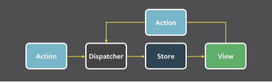
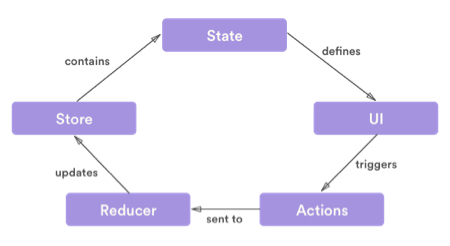
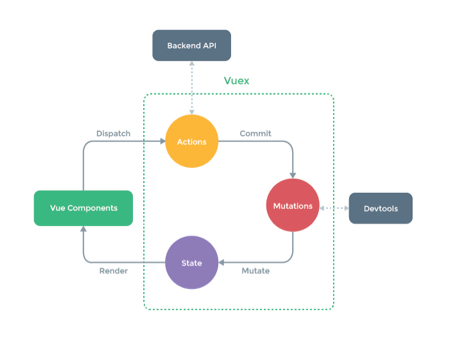

前端状态管理之Flux、Redux、Vuex
Flux是一种前端状态管理架构思想。基于 Flux 的设计思想，出现了一批前端状态管理框架。比较主流的就是 Vuex 和 Redux 了。
两篇特别好的文章
Flux
Flux 的思维方式是单向的，将修改数据层的 controller 代码收归一处，统一管理，组件需要修改数据层的话需要去触发特定的预先定义好的 dispatcher，然后 dispatcher 将 action 应用到 model 上，实现数据层的修改。然后数据层的修改会应用到视图上，形成一个单向的数据流。

Flux 的核心是 Dispatcher，通过 Dispatcher，用户可以注册需要相应的 action 类型，对不同的 action 注册对应的回调，以及触发 action 并传递 payload data。
简单来说，Flux的数据流生命周期就是： View 发起 Action -> Action 传递到 Dispatcher -> Dispatcher 将通知 Store -> Store 的状态改变通知 View 进行改变
Redux

Redux 和 Flux 的第一个区别是，在 Redux 中，去掉了 Dispatcher，转而使用一个纯函数来代替，这个纯函数接收原 state tree 和 action 作为参数，并生成一个新的 state tree 代替原来的。而这个所谓的纯函数，就是 Redux 中的重要概念 —— Reducer。
Redux 和 Flux 的第二个区别则是 Redux 不会修改任何一个 state，而是用新生成的 state 去代替旧的。这实际上是应用了不可变数据（Immutable Data），在 reducer 中直接修改原 state 是被禁止的
Redux 的工作方式遵循了严格的单向数据流原则，整个生命周期为：
- View 调用 store.dispatch，并传入 action 对象。action 对象是一个描述变化的普通对象
- 接下来，store 会调用注册 store 时传入的 reducer 函数，并将当前的 state 和 action 作为参数传入，在 reducer 中，通过计算得到新的 state 并返回。
- store 将 reducer 生成的新 state 树保存下来，然后就可以用新的 state 去生成新的视图
Vuex

和 Redux 中使用不可变数据来表示 state 不同，Vuex 中没有 reducer 来生成全新的 state 来替换旧的 state，Vuex 中的 state 是可以被修改的。即，以 mutations 变化函数取代 Reducer，无需 switch ，只需在对应的 mutation 函数里改变 state 值即可。一个 mutation 是由一个 type 和与其对应的 handler 构成的，type 是一个字符串类型用以作为 key 去识别具体的某个 mutation，handler 则是对 state 实际进行变更的函数。
这么做的原因和 Vue 的运行机制有关系，Vue 基于 ES5 中的 getter/setter 来实现视图和数据的双向绑定，因此 Vuex 中 state 的变更可以通过 setter 通知到视图中对应的指令来实现视图更新。
在 Vuex 中可以记录每次 state 改变的具体内容，state 的变更可被记录与追踪。Vuex 中的 action 也是 store 的组成部分，它可以被看成是连接视图与 state 的桥梁，它会被视图调用，并由它来调用 mutation handler，向 mutation 传入 payload。